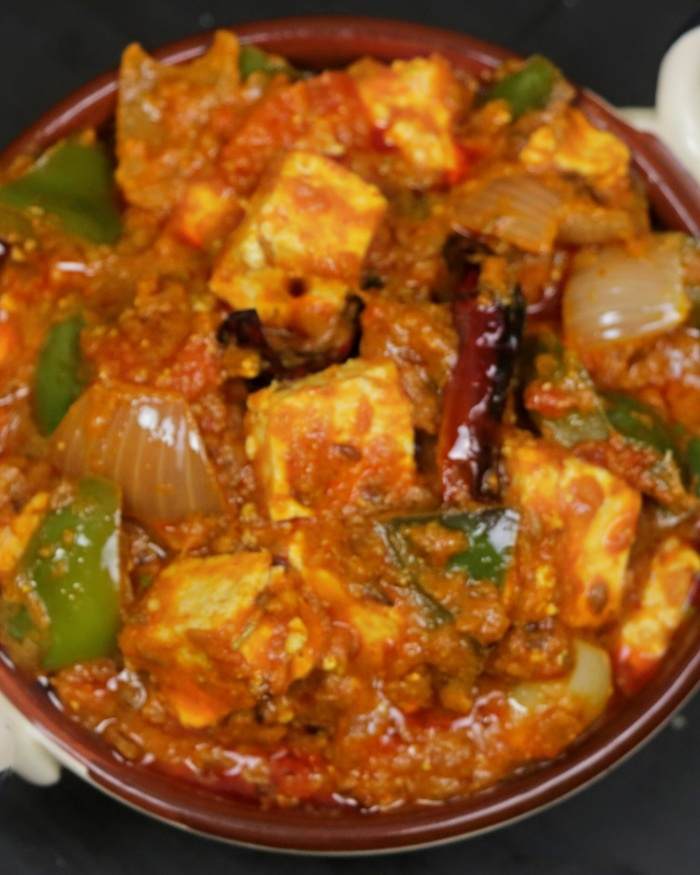

Kadhai Paneer is a spicy, warming, flavorful and super delicious dish made by cooking paneer (cottage cheese) and bell peppers in a fragrant, fresh ground spice powder. If you love the North Indian flavors and spicy foods, this dish is a must try! This restaurant style curry is best served with Butter Naan, Roti, Jeera Rice, and Steamed Basmati Rice.